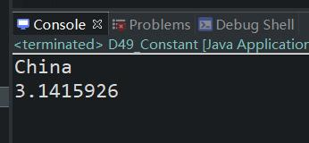

原文连接:https://www.cnblogs.com/ruigege0000/p/11832484.html
一、常量
1.常量的定义：final修饰的实例变量是不可变的，这种变量一般和static联合使用，被称为“常量”
2.常量的语法格式：
public static final 类型 常量名 = 值；
java规范中要求所有常量的名字全部大写，每个单词之间使用下划线连接
package com.bjpowernode.java_learning;
public class D49_Constant {
public static void main(String[] args) {
System.out.println(Chinese49.GUO_JI);
System.out.println(Math49.PI);
}
}
class Chinese49{
//国籍
//需求：每一个中国人国籍都是中国，而且国籍不会发生变化，为了防止国籍被修改，建议加final修饰
public static final String GUO_JI = "China";
}
class Math49{
public static final double PI = 3.1415926;
}
二、package
1.关于java语言中的包机制：
（1）包又称为package，java中一如package这种语法机制主要是为了方便程序的管理。不同功能的类被分门别类放在不同的软件包之中，查找方便，管理比较方便，易维护。
（2）怎么定义package呢？
i.在java源程序的第一行上编写package语句
ii.package只能编写一个语句
iii.语法结构：package 包名；
（3）包名的命名规范：
公司域名倒序 + 项目名 + 模块名 +功能名
采用这种方式重名的几率较低，因为公司域名具有全球唯一性
例如：
com.bjpowernode.oa.user.service;
org.apache.tomacat.core;
（4）包名要求全部小写，包名也是标识符，必须遵守标识符的命名规则
（5）一个包将来对应一个目录。
（6）使用了package机制之后那么怎么编译，怎么运行呢？
编译还是正常编译
但是运行时，使用了package机制之后，类名不再是原来的文件的名称了，类名是“包名.文件名”，并且它的文件夹还得提前建好，将class文件手动放到对应的目录下，如果用IDE就没有这么多事，直接编译运行即可。
注意：另一种方式：
i.编译：java -d 编译之后存放路径 java源程序的路径
例如：
javac -d D: D:/java/test.java
把D:/java/test.java编译成class文件，放到D：盘下
javac -d . *.java
把当前目录下的所有java文件都编译成class文件放到当前目录下
ii.运行：JVM的类加载器ClassLoader默认从当前路径下加载。保证DOS命令窗口的路径先切换到com所在路径，执行：java com.bjpower.javase.day11.Test01
五、源码：
D49_Constant.java
地址：
https://github.com/ruigege66/Java/blob/master/D49_Constant.java
2.CSDN：https://blog.csdn.net/weixin_44630050（心悦君兮君不知-睿）
3.博客园：https://www.cnblogs.com/ruigege0000/
4.欢迎关注微信公众号：傅里叶变换，个人公众号，仅用于学习交流，后台回复”礼包“，获取大数据学习资料